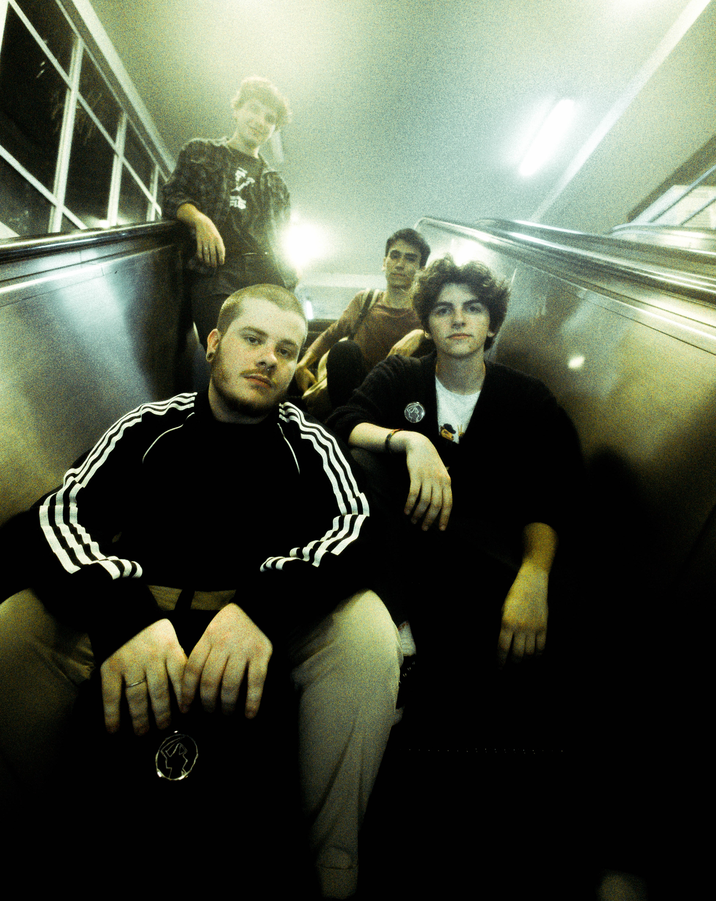

<section id="SOBRE">
    <div class="container sobre-container">
        <h2 class="mt-5 mb-5 text-center nask" style="font-size: 70px">SOBRE</h2>
        <div class="row">
            <div class="col-md-4">
                
            </div>
            <div class="col-md-8">
                <p class="fs-4 mt-2 text-center animated-text hidden ts">Freiya é uma banda de Porto Alegre, RS, formada
                    em 2019 pelos músicos Theo Tourn, Eduardo Mateus e Jonatha Fiuza. Com influências variadas que
                    incluem o Rock Alternativo, Emocore, Pop Punk e o mais recente Midwest Emo.</p>
                <p class="fs-4 mt-2 text-center animated-text hidden ts">No ano de 2023, Freiya lançou seu álbum de
                    estreia, intitulado "A Fatal Existência de um Sonhador". Neste álbum, a banda mergulha em uma
                    jornada musical e lírica que reflete a estética urbana e contemporânea. Suas letras abrangem uma
                    ampla gama de temas, desde amor até conflitos internos e mentais, transmitindo emoções genuínas e
                    profundas. Ao mesmo tempo, suas músicas possuem uma pegada pop envolvente, cativando o público com
                    melodias e refrões memoráveis.</p>
                <p class="fs-4 mt-2 text-center animated-text hidden ts">Com uma formação composta por Theo Tourn e
                    Eduardo Mateus nas guitarras e vocais, Pedro Gil no baixo e Jonatha Fiuza na bateria, Freiya segue
                    com sua energia contagiante no palco e sua dedicação à criação de músicas autênticas e impactantes.
                </p>
            </div>
        </div>
    </div>
</section>